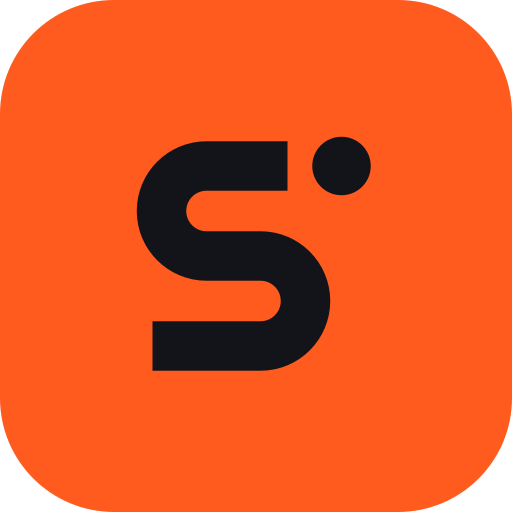
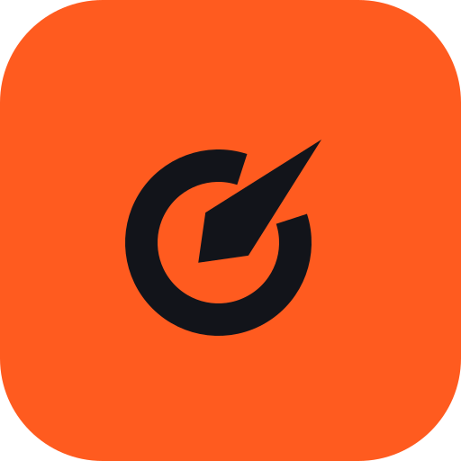
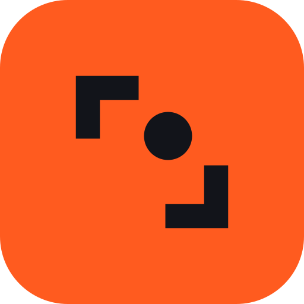

Logotype tiré de Mona Sans (licence SIL OFL, police de marque de GitHub) avec un « t » redessiné. Symboles dessinés sur une grille de 64. Couleur du symbole : orange #FF5B1F ou bleu #2B59FF selon l'accent retenu.

Idée. Le S n'est pas une lettre posée dans une forme : c'est un trajet à deux virages, comme une route sur une carte, qui se termine sur un point plein. L'éclaireur part, cherche, et trouve. Le point devient un motif réutilisable dans l'interface (prospect trouvé, état « vérifié »).
Logotype. Mona Sans largeur 112, graisse 600, approche resserrée. Le « t » est redessiné : fût droit sans crochet, sommet biseauté vers l'avant, comme une flèche de cap. Lisible à 16 px, le point reste séparé du tracé jusqu'à 16 px.

Idée. Le cadran d'une boussole, ouvert au nord-est ; l'aiguille passe par l'ouverture et sort du cercle. Le message : prendre un cap et aller chercher au-delà de son réseau.
Limite. La boussole est un symbole très utilisé (navigation, voyage). Logotype en largeur normale, plus neutre : moins de caractère que A.

Idée. Un viseur dont on ne garde que deux coins opposés ; la cible est décentrée vers le haut, comme un prospect repéré dans le cadre. Logotype en largeur 125 : très large, très affirmé.
Limite. Le viseur rappelle les icônes de scan et d'appareil photo ; le logotype très large prend beaucoup de place dans un en-tête mobile.
C'est la seule piste qui raconte le produit (chercher, puis trouver) sans emprunter un symbole déjà banal. Le S fonctionne seul comme favicon, le point plein devient un motif d'interface, et le « t » biseauté donne au logotype un détail qu'on ne retrouve pas dans une police standard.
Utilisation : symbole en couleur d'accent, logotype en encre (#12141A) ou blanc. Taille minimale : 16 px de haut pour le logo complet, 16 px pour le favicon. Zone de protection : la hauteur du point tout autour.